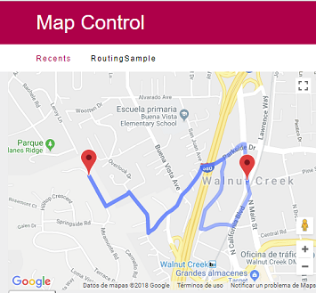
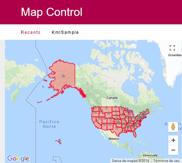
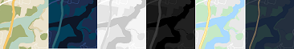
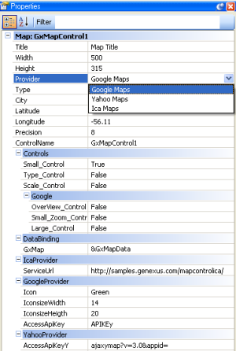
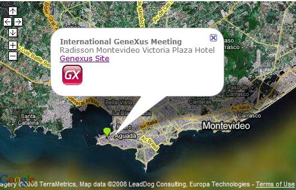
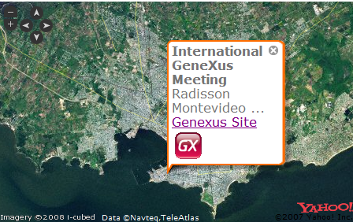

It allows including a map in a Web Form and marking points on it. In addition, it allows setting map display properties such as precision, map type, zoom control, etc. Currently, there are three providers: Google, Baidu, and Yahoo for any city in the world.
The control is distributed by Genexus, however, it is possible to download and install a newer version. In order to do this, uncompress the zip file to the User control directory of the GeneXus X installation. At design time, the control can be opened from View/Tool Windows/Toolbox. With drag & drop, a map is added to the Web Form and a sample is consolidated to mark some points on the map.
For each point, a title, text, and link can be specified.
To geoposition the map or a point on it, the coordinates (latitude/longitude) are needed. To this end, there is a City property with a set of cities and their coordinates or two Latitude/Longitude properties (N/E positive number, S/W negative number). These values are in decimal degrees format.
Download the control from here.
&Radisson = new GxMap.Point() &Radisson.PointLat = "-34.9056247303566" &Radisson.pointLong = "-56.198415756225586" &Radisson.PointInfowinTit ='XIX International GeneXus Meeting' &Radisson.PointInfowinDesc = "Radisson Montevideo Victoria Plaza Hotel - September 14-16" &Radisson.PointInfowinLink = "http://genexus.com/event/" &Radisson.PointInfowinLinkDsc = "Genexus Site" &Radisson.PointIcon = "Red" // or &Radisson.PointIcon = "http://chart.apis.google.com/chart?chst=d_map_pin_letter&chld=|FE6256|000000" &Radisson.PointInfowinImg = "http://wiki.gxtechnical.com/commwiki/servlet/apgetwikiimage?6327,1" // Some image &GxMapdata.Points.Add(&Radisson)
The sample is consolidated in the object's start event when dragging and dropping the control.
&MapLine = new() &MapLinePoint = new() &MapLinePoint.PointLat = '31.223182' &MapLinePoint.PointLong = '121.44654' &MapLine.Points.Add(&MapLinePoint) &MapLinePoint = new() &MapLinePoint.PointLat = '31.228209' &MapLinePoint.PointLong = '121.474006' &MapLine.Points.Add(&MapLinePoint) &GxMapData.Lines.Add(&MapLine)
&GxMapPolygon = new GxMap.Polygon( &GxMapPolygon.PolygonFill = "#00AAFF" &GxMapPolygon.PolygonFillOpacity = 0.80 &GxMapPolygon.PolygonStroke ="#FFAA00" &GxMapPolygon.PolygonStrokeOpacity = 0.50 &GxMapPolygon.PolygonStrokeWeight = 2 &GxMapPolygon.PolygonInfowinHtml = "Plaza Independencia" &GxMapPolyPath = new GxMap.Polygon.Path() &GxMapPolyPath.PathLat = '-34.90691372574081' &GxMapPolyPath.PathLong = '-56.198716163635254' &GxMapPolygon.Paths.Add(&GxMapPolyPath ) &GxMapPolyPath = new GxMap.Polygon.Path() &GxMapPolyPath.PathLat = "-34.906077860733134" &GxMapPolyPath.PathLong = "-56.19883418083191" &GxMapPolygon.Paths.Add(&GxMapPolyPath ) &GxMapPolyPath = new GxMap.Polygon.Path() &GxMapPolyPath.PathLat = "-34.90617464553802" &GxMapPolyPath.PathLong = "-56.20078682899475" &GxMapPolygon.Paths.Add(&GxMapPolyPath ) &GxMapPolyPath = new GxMap.Polygon.Path() &GxMapPolyPath.PathLat = "-34.90718647984938" &GxMapPolyPath.PathLong = "-56.200679540634155" &GxMapPolygon.Paths.Add(&GxMapPolyPath ) &GxMapPolyPath = new GxMap.Polygon.Path() &GxMapPolyPath.PathLat = "-34.90691372574081" &GxMapPolyPath.PathLong = "-56.198716163635254" &GxMapPolygon.Paths.Add(&GxMapPolyPath ) &GxMapData.Polygons.Add(&GxMapPolygon )
&httpclient.Host = 'maps.google.com' //load the associated host
&httpclient.Secure = 1
&httpclient.BaseUrl = '/maps/api/geocode/'
&postvar = 'xml?address=' + &address + '&sensor=false&key=' + &apikey
&httpclient.Execute('GET',&postvar) //execute a GET operation
&var = &httpclient.ToString()
&xmlreader.OpenFromString(&var) //parse the coordinates
&xmlreader.Read()
&xmlreader.ReadType(1,'lat')
&lat = &xmlreader.Value
&xmlreader.ReadType(1,'lng')
&long = &xmlreader.Value
GoogleMapControl1.Latitude =&lat //center the map in the coordinates
GoogleMapControl1.Longitude = &long
GoogleMapControl1.Precision = &precision
According to the new google security policies, it is necessary to acquire an API key and send it in each request, more details here.
Other service offer the same geocoding service, such us Here, OpenStreetMap, ArcGis
See this video for more info.
Other design (or runtime) properties of the control are as follows:
&routingpoint = new() &routingpoint.Latitude = 'xxxxxxx' &routingpoint.Longitude = 'yyyyyy' &routingpoint.Description = 'Work' &routingpoint.Pin = "blank.png" &GxMapData.Routing.add(&routingpoint) &routingpoint = new() &routingpoint.Latitude = 'xxxxxxx2' &routingpoint.Longitude = 'yyyyyyy2' &routingpoint.Description = 'House' &routingpoint.Pin = "blank.png" &GxMapData.Routing.Add(&routingpoint)

for &point in &GxMapData.Points
msg(&point.PointLat)
msg(&point.PointLong)
endfor
Where &point is based on GxMap.Point Data type and GX Map Control property = &GxMapData (based on GXMap Type).
Important: getLongitude and getLatitude properties were used in previous versions (deprecated).
Set Click_Lat and Click_Long variables into ClickLatitude/ClickLongitude design properties.
Event GoogleMapControl1.Click
&Window.Object = WPAsPopup.Create(&ClickLatitude , &ClickLonigtude)
&Window.Open()
EndEvent
In order to show the United State Map provided by a Kml File located under http://developers.google.com/kml/documentation/us_states.kml , programming something like the following:
Event Start
GoogleMapControl1.KML = true
GoogleMapControl1.KMLURL = "developers.google.com/kml/documentation/us_states.kml"
Endevent

| Property | Description |
| Provider |
Defines what provider will be used to draw the map (Google, Yahoo, Baidu.) |
| Google API Key | The key is obtained from http://www.google.com/apis/maps/signup.html It has some restrictions such as the number of accesses per day to the page. In version 2.0 or older, this property is not taken into account at runtime. |
| Type |
Possible Values= Map, Satellite, ImageHybrid. |
| City | Offers a combo to position the map on a specific city. To define another place, set the "Specific Coordinate" value and set the Specific Latitude and Specific Longitude values. To add a city to the combo, edit the User Control/Map/Mapdefinition.xml |
| Latitude | Used to center the map when City (Specific coordinate) is not selected. |
| Longitude | Used to center the map when City (Specific coordinate) is not selected. |
| Precision |
Levels 1 to 16 to indicate the zoom. |
| Style | Values: Standard, Silver, Retro. Dark, Nigth, Aubergine  |
| ControlName |
By default : GoogleMapControlX |
| Controls |
Controls appearing inside the map. |
| Small | Lets us pan/zoom the map. It enables arrows to move (up, down, left, right) and zoom (control "+" and "-") |
| SmallZoom | A small zoom control (no panning controls) used in the small map blowup windows used to display driving directions steps on Google Maps. |
|
Large |
A large pan/zoom control used on Google Maps. Appears in the top left corner of the map. |
| Overview | A collapsible overview map in the corner of the screen. It's not valid for Yahoo provider. |
|
Scale- |
A map scale Height. |
|
Data Binding |
An SDT variable of GXmap type can be specified to indicate points on the map at runtime: the variable is created when dragging and dropping the control. For each point of the provided collection, the following is specified: |
| Google Provider | |
| Icon |
Offers a combo of color icons. The possible values are: Red, Green Blue, Orange, Pink |
| OpenlinkInNewwindow | It allows opening a new window when clicking the PointInfowinLink inside the balloon. |
| Getcoordenates |
|
| Geticon | It allows changing the color of the icon which is used to get the coordinate of any point |
| OnClick |
It allows getting the latitude/longitude of any point, just by clicking on the map. • getvalue: return coordinates of the clicked point. • none: there is no action when clicking on the map. |
| Clicklatitude Clicklongitude |
This property allows getting the Coordinates when clicking on the marker (Example 4). |
| KML | |
| Kml | Boolean. Allows turning on a Kml Layer |
| KmlUrl | Character. Url of Kml file: i.e : 'gmaps-samples.googlecode.com/svn/trunk/ggeoxml/cta.kml' |
| Routing | |
| Travel_Mode | Driving/Walking. In order to use Routing please check Example 5 |
Google Provider: https://developers.google.com/maps/pricing-and-plans/
Since 22 June 2016, an ApiKey is required http://googlegeodevelopers.blogspot.com.uy/2016/06/building-for-scale-updates-to-google.html
In order to get an API key, go to https://developers.google.com/maps/web/ with the following terms of use,
Since June 2018 you must include an API key with all API requests and you must enable billing on each of your projects.
https://developers.google.com/maps/documentation/javascript/usage-and-billing
Yahoo Provider: The component was discontinued by the provider.
Versions:
9.0.4
Fix de Routing
9.0.3
Routing new implementation
IMPORTANT: requires google direction APIKEY
9.0.2
Hidden Yahoo maps
9.0.1
Styles support
8.3.11
Movemarker
Change Icon with Baidu maps
Changing City = "Specificate Coordinate" in runtime it doesn't work
8.3.10
Map size (Width, Height) with Baidu maps it doesn't work
8.3.9
Routing is broken
Default type routing = Driving
8.3.8
Clear Circles
Icon path java models fixed
error con On click = GetValue
8.3.6 -
- Web Panel which includes map is not showing when is called from another Web Panel which includes a map.
- An Event, launched from one button, which creates markers to not work properly.
- Markers are not shown, after refreshing the map.
- Markers images are distributed.
- The snippet code is improved.
- SDT to represent Circles is included.
- Event Click is not working properly.
8.3.1 -
- An error "You have included the Google Maps API multiple times", occurs using the control in Web Component.
- Double click when zoom is creating marker.
- Circles are implemented.
- Marker Click Event is enabled.
- Snippet code to draw Lines.
- Markers icons update.
- Multiple loads of Google JScript.
- Remove Lines.
- Map contour does not appear at design time, with abstract layout.
- Type Terrain support.
- New properties: icon size and icon anchor.
8.1 -
It allows API Key configuration.
Icon Url was changed.
Secure URL for accessing API.
8.0- Kml support
Routing support.
Breaking Change: GetLatitude, GetLongitude properties are not supported.
In order to Get Latitude and Longitude, please check Example 6 above.
7.0- Distribute GXxev2 U3
Draw lines.
Event GoogleMapControl.Click is enabled.
Map control works fine as dynamic Web Components.
6.1 - Add Baidu Maps (China) as a new maps provider. Now you can Draw lines (available on Google and Baidu). Reduced the number of resources requested (now depends on the chosen provider).
6.0 - Distributed with GxXev2. Implementation using Google map V3 API.
5.2 - Distributed with GxXev1 U3.
Geocoding
5.1 - Distributed with GxXev1 U1.
New properties: OpenlinkinNewwindow.
Rename property Get read-only to Onclick and include a new value "getvalue & center".
Fix: when a point is marked, it is possible to use another icon different from the predetermined one.
5.0 - Breaking change: Change the name of the control to GoogleMapControl.
New GetCoordenate section includes GetIcon Property, Get read-only property and getLatitude/getLongitude (both are read-only at design time).
4.0 - Access to new API V2 (required for Ruby prototyping).
It is possible to change the icon color:
For the entire map use the Icon property of the control.
Per each marked point using the PointIcon property of Gxmap.point data type.
3.1 - Fix some default values and implement the Access Yahoo Key.
3.0 - Include Icon (Google Provider). Include Link description and image (Google, Yahoo).
2.0 - Include Ica Provider - Montevideo Local Map.
1.3 - Include a fix for Google and Yahoo maps.
1.2 - Update the control for breaking change of Build 6884.
1.0 - Google and Yahoo map implementation.
You can choose the control provider from the window properties by selecting and setting the Provider property. Your selection depends on your needs because each provider offers different functionalities.


map.setCenter(new GLatLng(This.Latitude,this.Longitude), This.Precision );
map.setMapType(this.Type);
Small - let us pan/zoom the map.
map.addControl(newGSmallMapControl());
SmallZoom
map.addControl(new GSmallZoomControl());
map.addControl(newGMapTypeControl());
Overview(Only Google)
map.addControl(new GOverviewMapControl());
map.addControl(new GLargeMapControl());
map.addControl(new GScaleControl());

map.drawZoomAndCenter(new YGeoPoint(this.Latitude,this.Longitude, this.Precision)
map.setMapType(value);
map.addZoomLong();
map.addZoomShort();
map.addTypeControl()
map.addPanControl();
map.addZoomScale()
Please visit: Default Installation Instructions for User Controls.